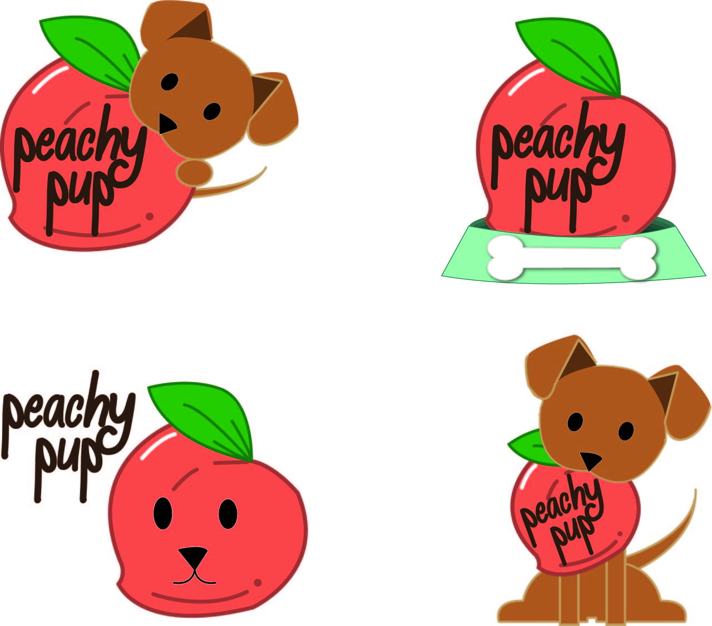

Cecilee Alberts

Propaganda poster
This is a propaganda poster made with insperation from the Wonder women movie.
Adobe Illistrator & Photoshop

Advertisment poster
This poster is a made up advertisment for a VR game world I made up.
Adobe Illistrator

Logo design
These are practice logos for a fictional company.
Adobe Illistrator

Logo design branding
This project used one of the logos I and I had to use it to make mock ups of branded products.
Adobe Illistrator

Design exsercise
This is just some design exsercises using a mixture of geometric and organic shapes.
Adobe Illistrator

Spray tool
These are two pieces were made with the spray tool.
Adobe Illistrator